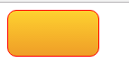

代码：background: linear-gradient(to bottom, #fed130 0%,#ef9d27 100%);
效果：

语法：
<linear-gradient> = linear-gradient([ [ <angle> | to <side-or-corner> ] ,]? <color-stop>[, <color-stop>]+)
<side-or-corner> = [left | right] || [top | bottom]
<color-stop> = <color> [ <length> | <percentage> ]?
取值：
下述值用来表示渐变的方向，可以使用角度或者关键字来设置：
<color-stop> 用于指定渐变的起止颜色：
说明：
用线性渐变创建图像。
- 如果想创建以对角线方式渐变的图像，可以使用
to top left这样的多关键字方式来实现。 用默认的渐变方向绘制一个最简单的线性渐变
示例代码：
以上几句代码都可以实现如（图一）的渐变效果

兼容性：
| IE | Firefox | Chrome | Safari | Opera | iOS Safari | Android Browser | Android Chrome |
|---|---|---|---|---|---|---|---|
| 6.0-9.0 #2 | 2.0-3.5 | 4.0-9.0 -webkit- #1 | 3.1-3.2 | 15.0+ | 3.2-4.3 -webkit- #1 | 2.1-3.0 -webkit- #1 | 10.0-25.0 -webkit- #1 |
| 10.0+ | 3.6-15.0 -moz- | 10.0-25.0 -webkit- | 4.0-5.0 -webkit- #1 | 5.0-6.1 | 4.0-4.3 -webkit- | 26.0+ | |
| 16.0+ | 26.0+ | 5.1-6.0 -webkit- | 7.0+ | 4.4+ | |||
| 6.1+ |
- 使用过时的语法：-webkit-gradient(linear,…)
- IE6.0-9.0使用私有滤镜来实现该效果: progid:DXImageTransform.Microsoft.Gradient()